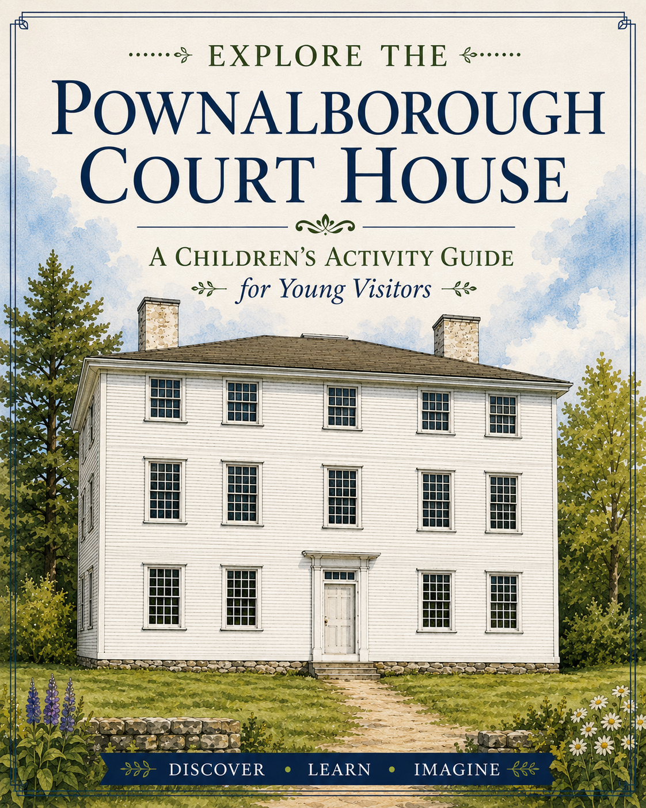
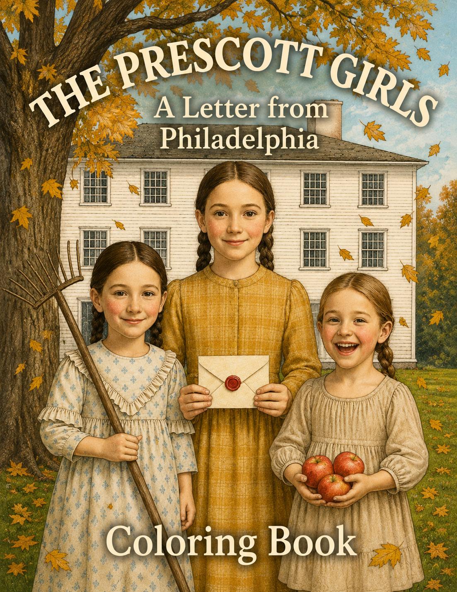

Books
A Well-Regulated Press publishes historically grounded fiction, research, and educational works rooted in archival discovery, material culture, and responsible historical interpretation.
The Prescott Girls: A Letter from Philadelphia
Winner, 2026 Independent Author Awards — Fiction: Northeast and Finalist — Historical Fiction & Best Educational Categories
An illustrated historical novel inspired by real nineteenth-century schoolgirl samplers, family letters, and archival discoveries.
In 1834, nine-year-old Beckie Prescott receives a letter from Philadelphia that connects her family in rural Maine to a larger American story. Alongside her sisters Louisa and Sallie, she learns about family, friendship, education, and life in a rapidly changing young nation.
Developed in collaboration with museums, historians, and textile scholars, the book is accompanied by research papers, teacher guides, historical galleries, and educational resources.
Preview The Book Learn More Teacher Resources Research
Pownalborough Court House: The 1936 Historic American Buildings Survey
An illustrated study of the 1936 Historic American Buildings Survey of the Pownalborough Court House in Dresden, Maine.
The book presents and interprets the nineteen measured drawings produced by the survey, exploring the building's floor plans, elevations, structural framing, architectural details, and original hardware. It also places the survey within the history of HABS and historic preservation in Maine.
Preview The BookEducational Books

Pownalborough Court House Activity Book
An activity-based introduction to the people, objects, skills, and stories of the Pownalborough Court House, designed to encourage young visitors and readers to explore history through observation, puzzles, and hands-on learning.
Preview The Activity Book
Pownalborough Court House Coloring Book
A coloring-book exploration of the historic courthouse and the people, objects, and everyday life connected with its eighteenth- and nineteenth-century history.
Preview The Coloring BookForthcoming
Work is underway on Louisa's Journey, a companion volume to The Prescott Girls: A Letter from Philadelphia.
Drawing on the same family letters, schoolgirl samplers, and historical research that inspired the first book, the story follows Louisa Prescott's journey from rural Maine to Philadelphia and the people, places, and events that shaped her life.